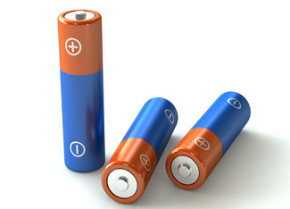

Several everyday, useful products - from batteries to paint - are hazardous if not disposed of properly. It’s unwise to simply throw these things in the trash: Toxins in these products leach into landfills and eventually get into our air and water. The good news is there are recycling centers for many of these products, and if there isn’t one near you, most cities have a Household Hazardous Waste (HHW) disposal site. Earth 911 allows you to type in the product you need to get rid of and your ZIP code, then lists drop-off locations in your area.
1. Rechargeable and single-use batteries
Batteries contain lead, nickel and mercury, all of which can damage the environment when thrown away. When batteries are incinerated at landfills, toxic substances enter the air and water. According to Earth 911, the average person throws away eight batteries a year. Rechargeable batteries reduce that number, but they eventually lose their ability to hold a charge and they too are made of toxic materials. Rechargeable batteries are one of the easiest items to recycle because most major electronics stores, such as Radio Shack and Best Buy, will recycle your dead batteries for you at no cost. Although there aren’t rules against throwing out single-use batteries, if you can avoid throwing them out by taking them to the HHW site that is the ideal solution.
2. Cleaning products
Most antibacterial cleaners, air fresheners, dishwasher detergent, oven cleaner, carpet cleaner and toilet/sink/tub/tile cleaners contain toxic ingredients that can seep into groundwater. Earth 911 says cleaning products pollute the air, increase smog formation, cause asthma and inhibit plant growth. Not only are most cleaning products bad for the environment, they can be bad for your respiratory health, too. To minimize these effects, dispose of the unused products at your local HHW site. An easier solution may be to buy or make your own greener cleaners. Regular soap is just 0.2 percent less effective than antibiotic soap in killing germs and not nearly as bad for the environment. Scrubbing your toilet, sink or tub with vinegar or lemon juice and baking soda works well. Candles or fresh air can do the same job an aerosol air freshener does. Baking soda and water is a safe and effective way to clean your oven or carpet. When shopping, look for dish detergent without chlorine and phosphate. There are also several lines of green cleaners, such as Seventh Generation, Mrs. Meyer’s Clean Day and even SC Johnson makes a line called Greenlist.
3. Medications
Both prescriptions and over-the-counter medication can expire, but it is bad to throw them in your trash or flush them. They can contaminate water supplies and harm wildlife. In March 2008 an Associated Press investigation found low levels of over-the-counter drugs such as ibuprofen and pharmaceuticals - including mood stabilizers, antibiotics, sex hormones and anti-convulsants - in drinking water supplies of several major cities causing concern of what the long-term effects could be from this exposure. The investigation concluded that most of the drugs came from residual medication in urine, but acknowledged that many Americans flush unused medicine down the toilet adding to the problem. Some pharmacies will take back unused or expired drugs; otherwise take them to the HHW site.
4. Compact florescent lamps (CFLs)
CFL bulbs are significantly more energy efficient than incandescent light bulbs, but they contain a small amount of mercury, which only harms the environment when the bulbs break. An older CFL bulb contains about 4 milligrams of mercury. Newer bulbs contain about 1.4 milligrams, which it still too much to throw away in some states. Home Depot has a CFL recycling program where you can bring your unbroken bulbs into any of its stores for free recycling. If a bulb breaks and your state allows you to throw CFLs away, put the broken bulb in two plastic bags or a glass jar to prevent further contamination. Follow these safe steps when cleaning up a broken CFL.
5. Paint and paint thinner
In many states it is illegal to throw away paint or paint thinner. When the cans leak at the dump, they can contaminate drinking water and the ocean. You can dispose of your old paint and thinner at a HHW site. Paint can be reused if you take it to a paint store and have it remixed or you can donate it to Habitat for Humanity if it’s still good. Another solution is just buying the amount of paint you’ll actually need for your project. Smaller can sizes are available.
6. Electronics
Electronic waste, also known as e-waste, is also illegal to throw away in some states. To find out the rules in your state the Environmental Protection Agency has started a program called eCycling. E-waste can be TVs, MP3 players, video game consoles, computers or computer monitors. All of these contain lead; some can contain as much as 8 pounds of lead. According to Earth911, 315 million computers, which equals 1.2 billion pounds of lead, were in U.S. landfills in 2004. Lead is bad for our nervous systems and kidneys. Several electronics stores and companies recycle old products when you replace them with new ones. If you just need to get rid of the device and aren’t replacing it, some have an e-waste disposal fee or if it still works, take it to Goodwill or list the item on Freecycle or Craigslist.
7. Pesticides
It is illegal to pour pesticides down the drain; doing so could kill fish and other wildlife. Earth911 estimates that 90 percent of U.S. homes use pesticides. Weed killer, bug spray and even flea collars should not be thrown away. All pesticides have the proper disposal instructions on the label and are accepted at HHW sites.
Disposing of your household hazardous waste in an eco-friendly manner is simple and easy, so when it’s time to throw things away, don’t forget to look up where you can take your waste at Earth 911.
Links:
Reuse and Recycle Electronic Waste
Bright Ideas for Home Lighting
Make Your Lawn Naturally Beautiful
Are Rechargable Batteries Better?
Why You Should Abandon Antibacterial Soap|
 ISTOCKPHOTO Single-use and rechargeable batteries can harm the environment if thrown away. Rechargeable batteries are easy to recycle. |
|
|